Selected work
-
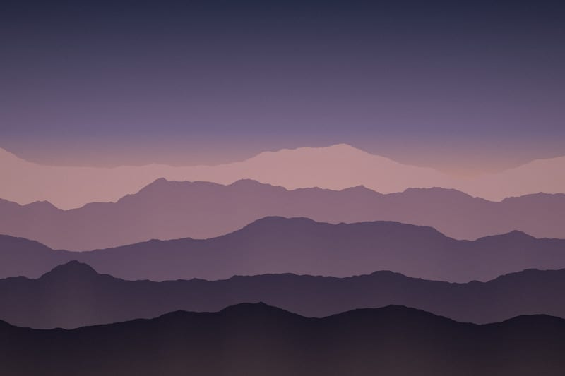
01 Ridgelines -
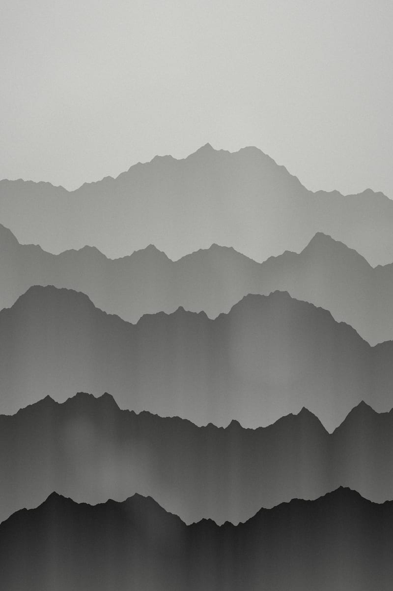
02 Fog Line -
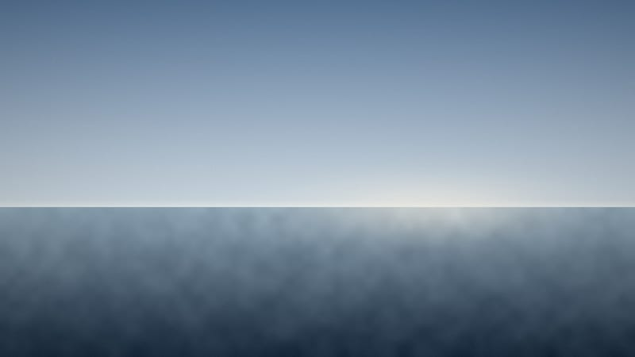
03 Horizon, 05:58 -
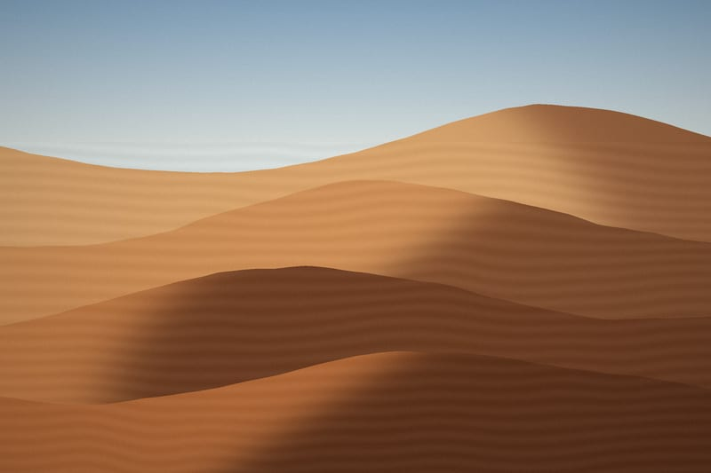
04 Erg -
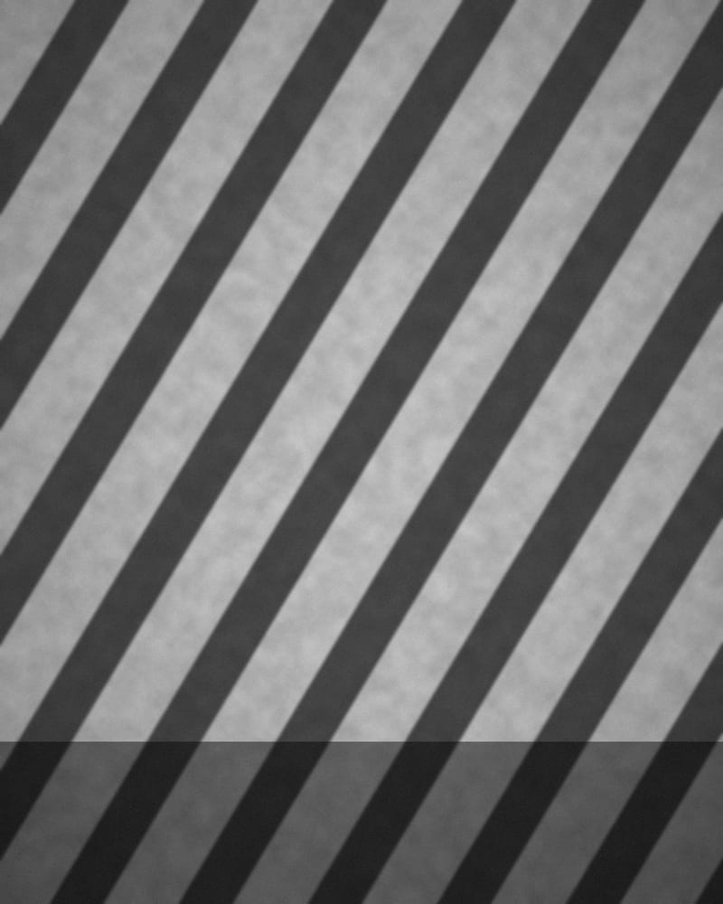
05 Shadow Study No. 3 -
06 After Hours -
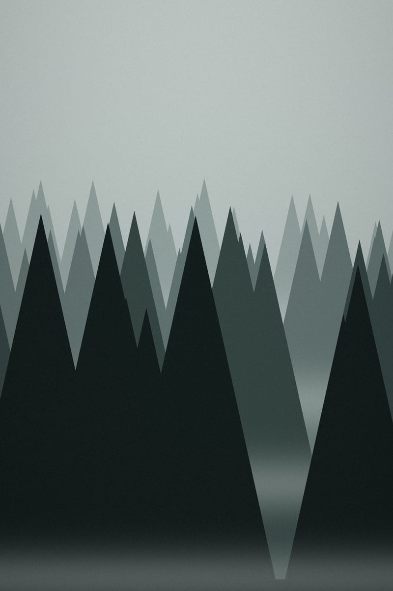
07 Pines in Cloud -
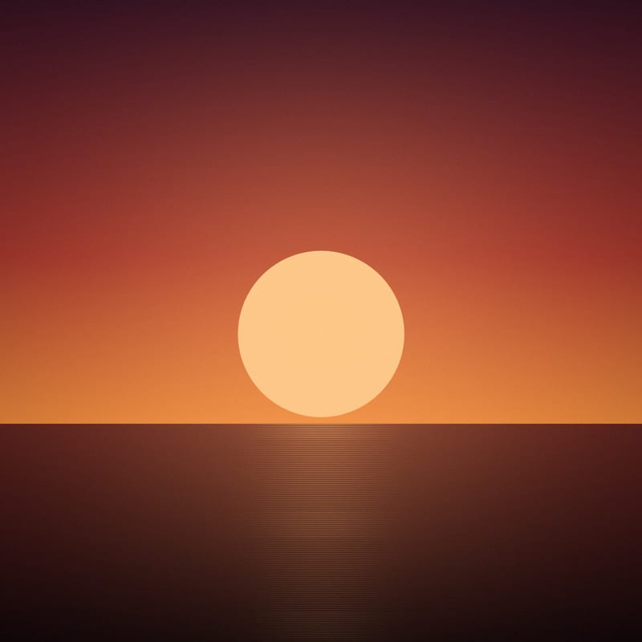
08 Sun Disc -
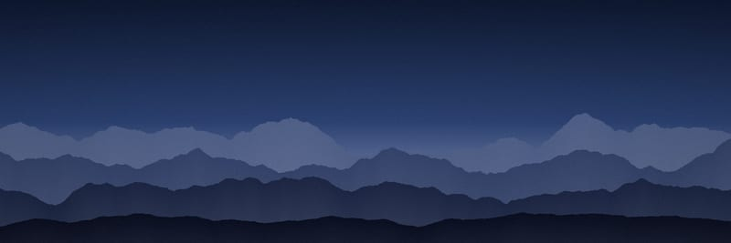
09 Blue Hour Range -
10 Window, 15:14 -
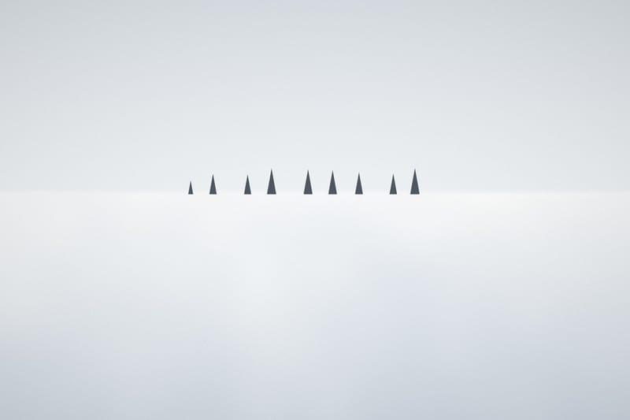
11 Treeline -
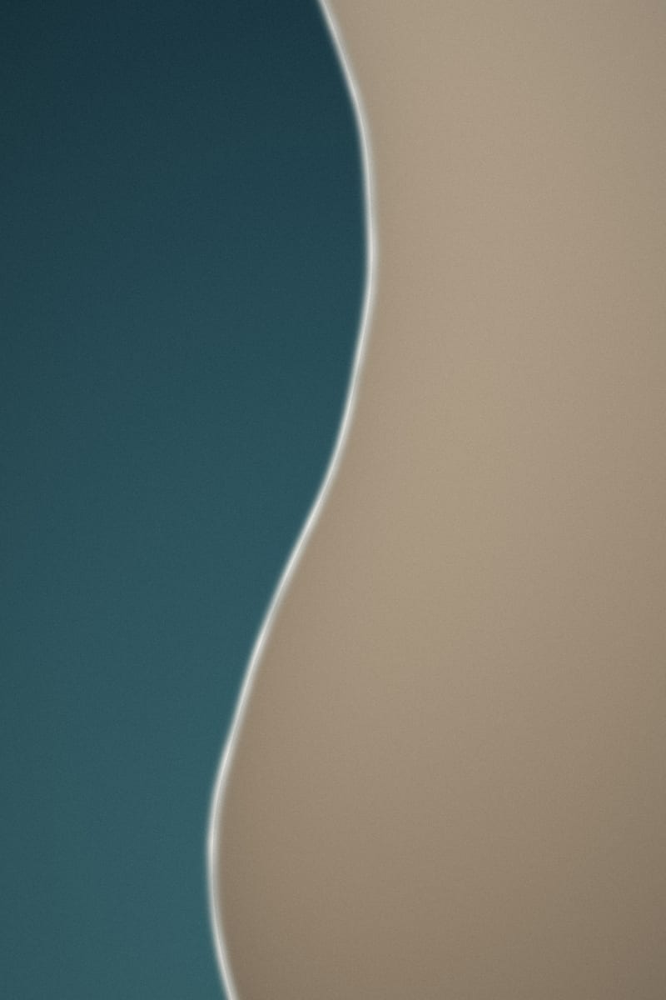
12 Tide Edge -
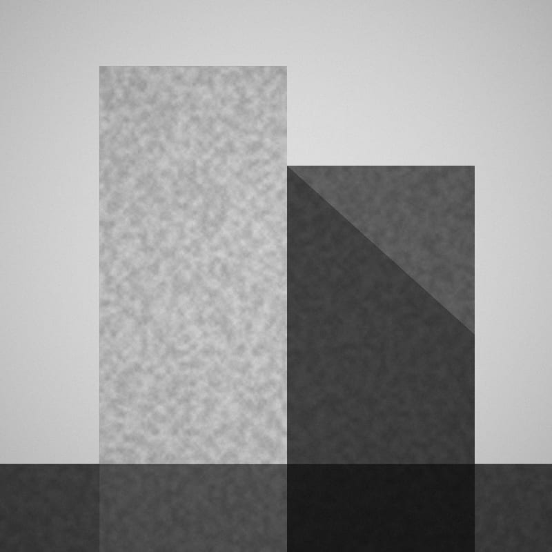
13 Planes -
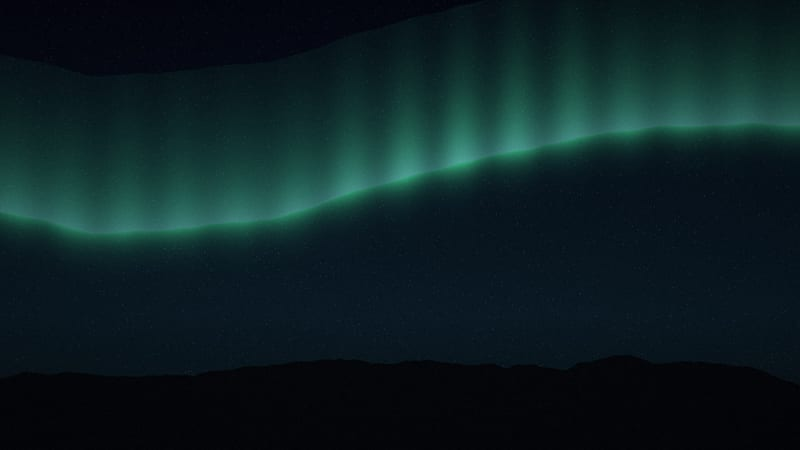
14 Corona -
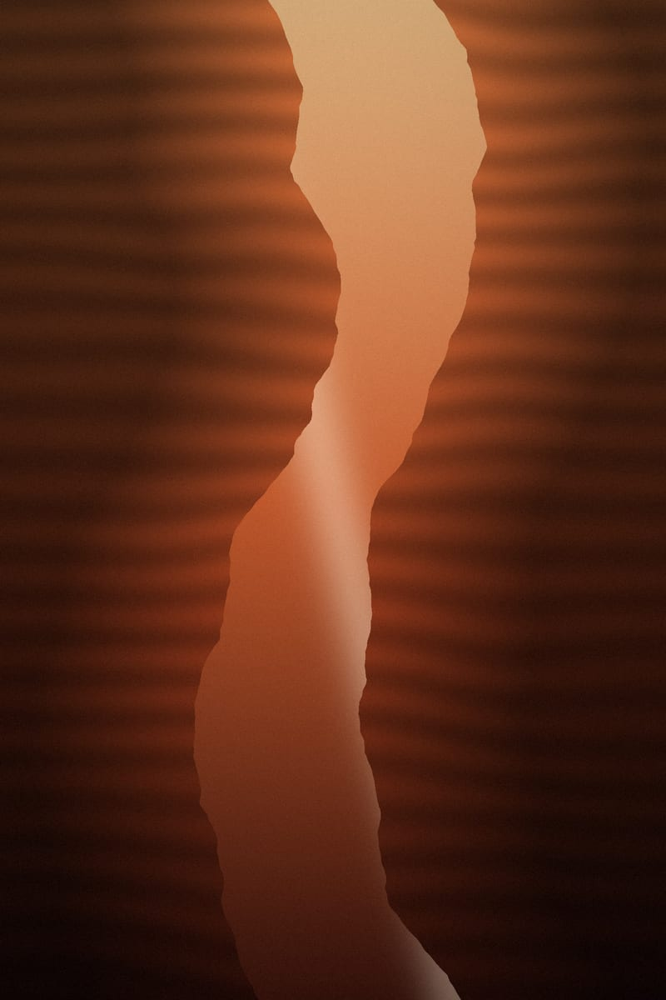
15 Slot -
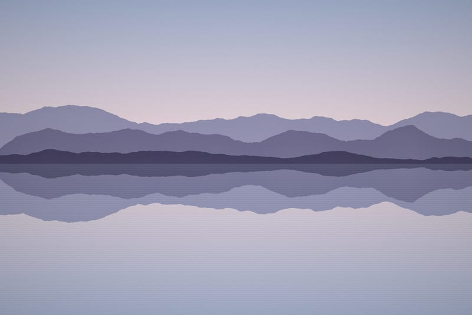
16 Still Water -
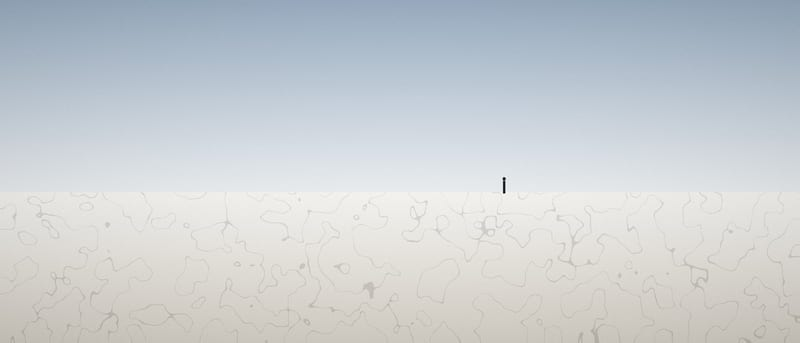
17 Figure, Salt Flat


About
Your Name is a photographer working with landscape, light and the quiet geometry of built places.
Replace this paragraph with a short biography: where you are based, what you photograph and why, and the kind of work you take on. Two or three sentences is plenty; the photographs do the talking.
- Based in
- City, Country
- Available for
- Commissions, editorial, fine-art prints
- Selected clients
- Client One, Client Two, Client Three
Contact
For commissions, licensing and print enquiries:
hello@example.com